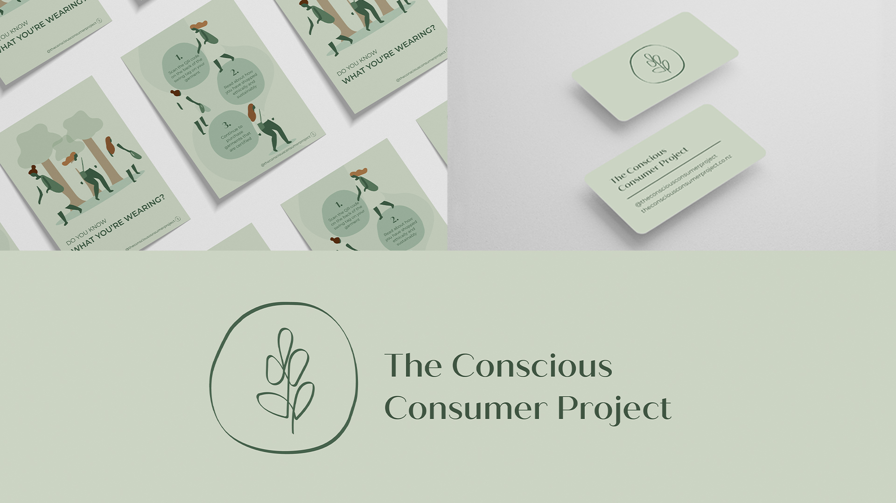

biography
Hello! I am Briar Lakeman and I will be graduating with a Diploma in Design. Prior to studying Design, I
completed a Bachelor's Degree in Marketing and Strategic Management. I decided that I wanted to explore
the more creative side of business, and have thoroughly enjoyed learning about design and linking this
with my prior knowledge in business.
I have always enjoyed design and being creative and have learnt throughout my schooling and university
that I am more right brained than left brained! I decided to do a bachelor’s degree in business,
specifically marketing, as I felt this would allow me to use the creative side while also requiring
analytical thinking. From looking at the different aspects of marketing I decided that I wanted to
explore the mediums used to communicate with consumers instead of just learning about why. I have always
been passionate about design and knew that I wanted to further my study by learning about communication
design. From studying design, I have developed a passion for good design and am specifically passionate
about branding, print design and typography. I have had the opportunity to explore all different areas
in design including app UX design and web design which has broadened my knowledge in the different
aspects.
project description
The fashion industry is one of the worst industries in the world for their lack of sustainable and
ethical practices. It is shocking to know that 10% of the world’s global carbon emissions and 20% of the
world’s wastewater is coming from the fashion industry. To make matters worse, consumers are pushed to
buy new clothing each season and throw away clothing that isn’t “on trend” making only 15% of clothing
recycled or donated.
The Conscious Consumer Project focuses on communication with fashion brand consumers, providing
consumers with the resources they need to be aware of whether a brand is sustainable and ethical. The
primary goal of The Conscious Consumer Project is to enable consumers to make the choice to shop
ethically and sustainably. To help the planet, we need to be aware of what we consume in terms of
clothing, as we tend to focus only on how cheap items are and how cool they look and we forget about the
damage being done.
I have developed a certification that allows consumers to recognise if they are purchasing a brand that
employs sustainable and ethical practices. I have also created posters that show how consumers are being
conscious and how they can learn more information about what the Conscious Consumer Project means for
them. I have also developed a swing tag that is featured on fashion brands which includes the
certification, and a QR code consumers can scan to learn more about what this swing tag means for them.
The Conscious Consumer Project

For more information contact us
Email: degreeshow@waikato.ac.nz
Faculty phone: 0800 924 528
Faculty information: cs.waikato.ac.nz